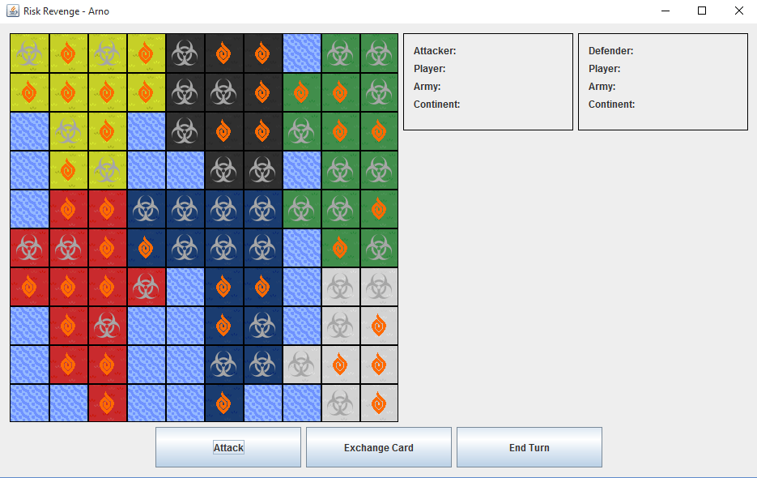
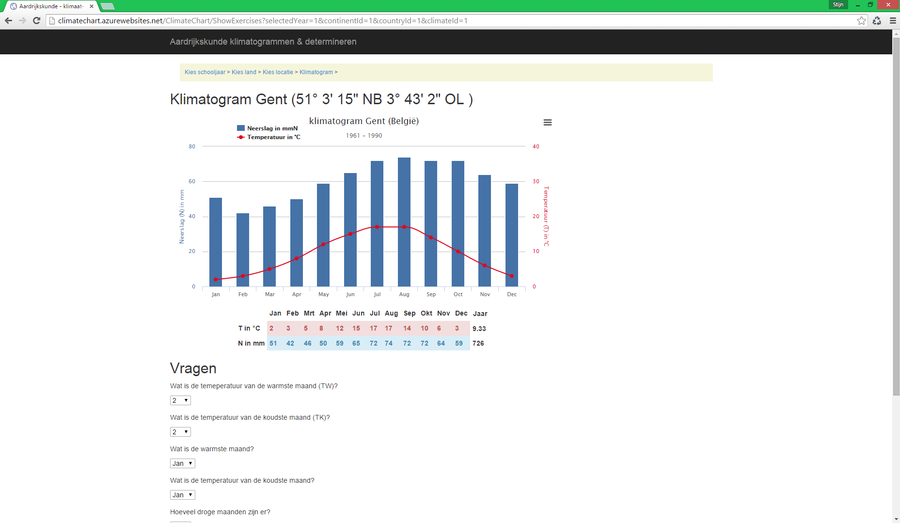
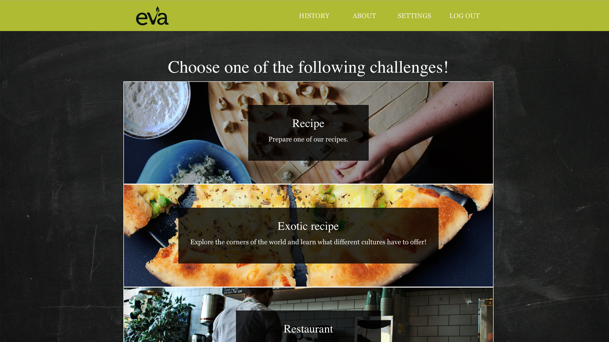

<div class="achievements-container">
    <div class="container main-content bg-white-opac ">
        <h1>Realisaties</h1>
        <div>
            <h2>Project Risk (2012-2013)</h2>
            
            <p>
                Dit was het eerste project waar ik aan heb deelgenomen in de richting Toegepaste Informatica aan de Hogeschool Gent. Als
                opdracht kregen we de taak om in een groep van 4 personen een Java implementatie te maken van het bordspel
                Risk. Deze bestaat uit een grafische user interface (GUI) gemaakt met Javax.swing components. Het bord bestaat
                uit 100 vakjes die kunnen bestaan uit water of land. Het spel kan gespeeld worden met minimum 2 tot maximum
                4 spelers die vervolgens elkaar elk om beurt kunnen aanvallen of door kaarten uit te wisselen hun troepen
                kunnen versterken. De gegevens zoals de landkaarten worden opgeslagen in een geïntegreerde SQLite database.
            </p>
            <p>
                Voor mij was dit één van mijn moeilijkste projecten aangezien ik voor het eerst mijn kennis in de praktijk ging omzetten
                en zeer weinig ervaring had met java-code te schrijven. Als ik nu het project bekijk, zou ik zeggen dat het
                één van de makkelijkere projecten is die ik al gemaakt heb. Ik merk ook op dat het project verouderd is en
                JavaFX nog niet bestond waardoor het niet meer zo goed functioneert als vroeger. De source-code kan je
                <a target="_blank" href="https://github.com/LoganDupont/Project_2012-2013_Risk">hier</a> terugvinden.
            </p>
        </div>
        <div>
            <h2>Project Software rond klimatogrammen (2014-2015)</h2>
            
            <p>
                Tijdens het tweede jaar kregen we de kans om een software rond klimatogrammen te maken voor een leerkracht aardrijkskunde.
                Er werd gevraagd om een website en Java applicatie te ontwikkelen voor het inoefenen van klimatogrammen enerzijds
                en het beheren er van anderzijds. Dit project werd gemaakt in een team van 4 personen waarbij we voor de
                website hebben gebruik gemaakt van C# en Azure hosting. Per graad werden er andere oefeningen aangeboden,
                afhankelijk van het leerplan. De Java applicatie stelt de leerkracht in staat om nieuwe klimatogrammen toe
                te voegen, andere determinatietabellen in te geven, toetsen op te stellen en deze ook te converteren naar
                een afdrukbaar medium. De source-code kan u terugvinden op github en is opgesplitst in 2 delen, namelijk
                in <a target="_blank" href="https://github.com/LoganDupont/Project_2014-2015_DotNet">.Net</a>                en <a target="_blank" href="https://github.com/LoganDupont/Project_2014-2015_Java">Java</a>.
            </p>
        </div>
        <div>
            <h2>Project 21 day challenge (2015-2016)</h2>
            
            <p>
                In mijn laatste jaar kregen we de taak om een Android en webapplicatie te ontwikkelen om een vegetarische en veganistische
                voedingswijze te promoten. Onze klant was niemand minder dan 'EVA vzw' die in België bekend is voor het organiseren
                van 'Donderdag Veggiedag'. Het is de bedoeling dat de gebruiker 21 dagen wordt uitgedaagd om iedere dag veganistische
                gerechten te proberen, restaurants te bezoeken of voor vrienden te koken. De app werd opgemaakt in Android
                Studio, terwijl de webapp met AngularJS is opgesteld. Er werd gezorgd dat de webapp responsive is en eveneens
                goed op mobile devices te gebruiken. Aangezien de resultaten van eindevaluatie nog niet bekend zijn gemaakt,
                mogen wij de sourcecode nog niet vrijgeven. U kan de webapp momenteel wel <a target="_blank"
                href="http://eva-test.azurewebsites.net/#/home">hier</a> bezichtigen.
            </p>
        </div>
    </div>
</div>